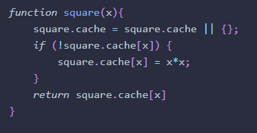
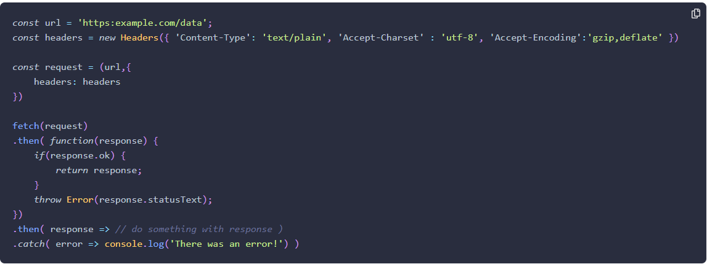

Chapter 11 - Further Functions
- Functions are first class objects, which means they have properties and even methods. For instance the length property returns the number of parameters.
- Use the call method to set the value of this. Just pass it the object you want to be this as the first parameter.
- Use "apply" to call the method, passing the paramters as an array for the second argument.
- Memoization = result caching
- 
- Let's you cache inside a method for faster returns
- I was wondering why IIFE's were used: IIFEs are a useful way of performing a task while keeping any variables wrapped up within the scope of the function. This means the global namespace is not polluted with lots of variable names.
- Functions can change themselves?! That seems very dangerous, and I can't imagine a valid use case for it…
- "If the function is also assigned to another variable, this variable will maintain the original function definition and not be rewritten." <-- also confusing and strange. I won't ever use this.
- I really don't think init-time branching is worth re-writing functions for.
- Recursive functions - already well aware of recursion
- JavaScript is single threaded so callbacks are very important to create non-blocking code.
- Promises help avoid "callback hell" and make your code easier to understand, even though it really is just making use of callbacks underneath.
- Personally, I like async/await to handle the asynchronous code issues. Feels more natural to me coming from C#, and it keeps code mostly the same as synchronous.
- Make more generalized functions with callbacks - sometimes a function may become more useful if you can add a modifying function as a parameter. The example in the book is a random number generator that can apply some math function to the random value before it's returned.
- Functions can return functions, which is similar to the idea that functions can change themselves, and similarly the example in the book is a little flimsy. Could be useful in some functional scenarios though I guess.
- "A closure is formed when a function returns another function that then maintains access to any variables created in the original function’s scope. "
- Generators - yield! I didn't realize javascript had this concept. Used for iterating over a list of some kind. Call next on the generator function variable to get the next value.
- Pure functions:
- Function relies on input only, no outside state
- No side effects - no state outside of the function can be changed during execution
- Output is generated from input, the same input will always return the same output.
- Which means in practice:
- Pure Functions must have at least one parameter, or they would do nothing.
- Pure Functions must return a value
- Pure functions that operate on an array, must return a new array
- Currying is the process of returning a new function if a function is called without supplying all of the parameters.
- "Advocates of functional programming can be quite partisan about its benefits. But even adopting some of its principles, such as keeping functions as pure as possible, and keeping changes in state to a minimum, will help improve the standard of your programming."
Chapter 13 - AJAX
- Originally "Asynchronous JavaScript and XML"
- Pretty much ubiquitous now, most websites update partial pages with javascript
- Rather than the old XMLHttpRequest , the Fetch API should be used.
- The Fetch API uses promises
- Then(response) - response can access the response body, headers, status code (and text)
- "At the present time, there is no support for the redirect() method in any browser." <- I'm not sure what the point of talking about it is then?
- Response.text() to get the text of the response
- Response.blob() to read raw data from the response
- Response.json() returns a promise that can then be resolved
- When using the fetch API, passing in a Request object gives more fine-grained control over what's sent
- Example with fetch:

- You can use fetch for retrieving and posting information
- FormData can also be used to send form data with the Fetch API
- Fetch is a living standard, so it's still being developed even while it's available, so it might change